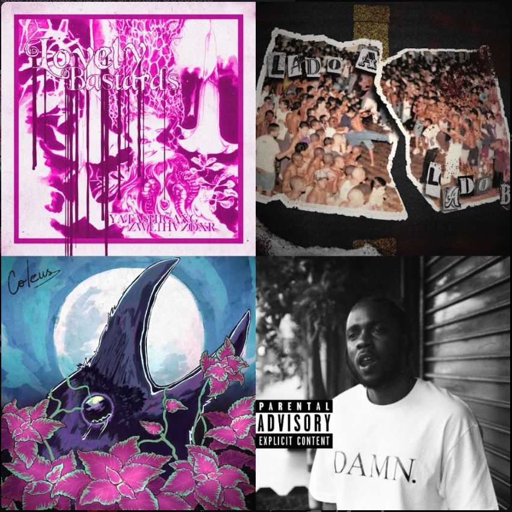
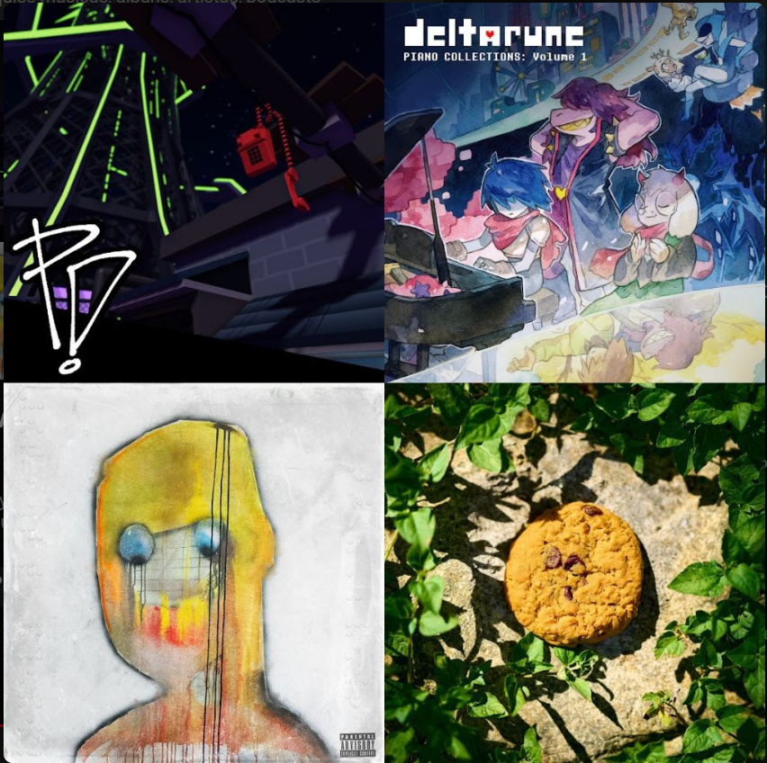
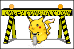

MUSICS :::D
This is a section where the main focus is to show My favourite music of the moment, and also
my playlists that I like, so this will be separated in 2 categories: the musics, and the albums. And
both will will have different collorings. Hope Y'all like my taste, and give suggestions at my email (it's
on the first page, just reenter the site bro).
.And a reminder: the site will go in a order of: Singles ->
Playlists -> Albums, in the future I'll try to
put a button that will scroll 'till the part you want.
Singles :1

This is a random single I've found while scattering the random yt music playlists I found recentely, and it's really good, chilly yet eerie, me like it :).
Playlists :o

.One of, if not the first playlists I've come up,
around february 2025, and for this albums I will be
relistening to them and giving a more recent opinion on it,
because it's really probable when I did this playlist at
the time I thought this was the pinnacle of music,
in which is still really good but not as much as of what
I hear nowadays.
.But nonetheless, this is a more "feelin' it" vibes,
with songs that can be serious tracks in part of the lyrics
but hard countered by more energetic tracks, overall is not
to be consistent and just to be a thing to shake up your
body :).


 MAIN PAGE
MAIN PAGE


This site is reserved for INCOG, aka Incontency | 2026 - 20XX